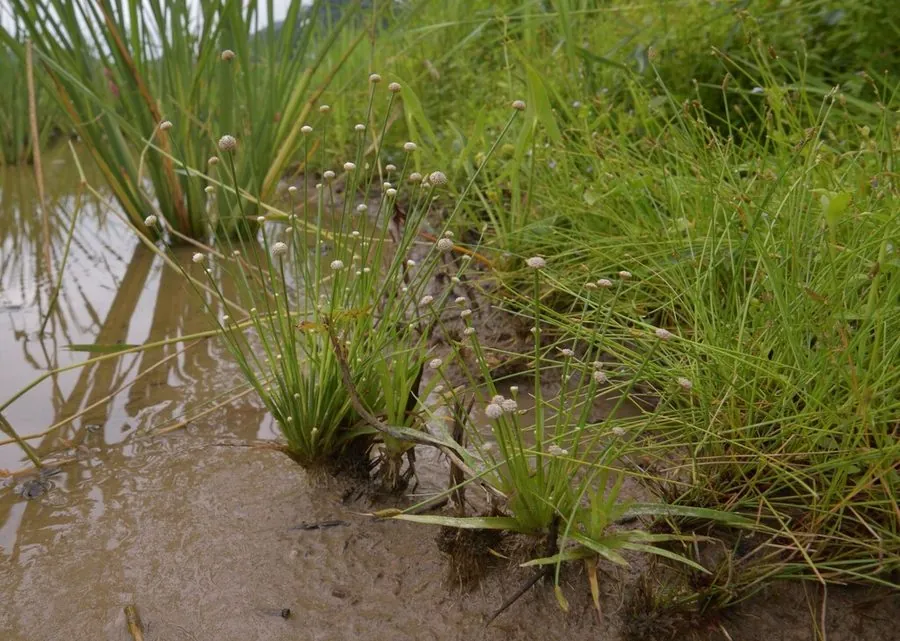

水生植物 · 植物界
谷精草 Eriocaulon buergerianum

谷精草科谷精草属一年生水生草本，叶片基生、花序球形如小绒球，常见于南方水田，全草可入药，有明目之效。
- 分类
- 门被子植物门纲单子叶植物纲目禾本目科谷精草科属谷精草属
- 栖息环境
- 水稻田、沼泽和浅水湿地，喜温暖、湿润
- 地理分布
- 中国、日本及东南亚，中国南方各地常见
- 保护级别
- 暂无评估
物种志
谷精草为谷精草科谷精草属的一年生水生草本，株高 10–30 厘米，须根细密。叶片基生，线形，长 5–15 厘米，宽 1–2 毫米。花序为头状花序，球形，直径 3–5 毫米，花小、白色或淡黄色，花期 7–10 月；果实为蒴果。
谷精草分布于中国、日本和东南亚的水稻田、沼泽和浅水湿地，中国南方各地常见，喜温暖、阳光充足和湿润的浅水环境。它花序球形如小绒球，全草可入药，有疏散风热、明目退翳之效，是传统中药材“谷精草”的来源。栽培以种子繁殖为主，需保持浅水和湿润；在稻田中常作为伴生植物出现，也可在水景中作点缀。
形态与习性
- 株高10–30 厘米
- 叶片基生线形，长 5–15 厘米
- 花期7–10 月，花序球形、白色
- 水深浅水至湿润泥面
- 光照喜充足阳光
- 繁殖种子繁殖
- 主要用途全草入药，明目退翳
- 特点花序球形如小绒球
趣味知识
- 谷精草的花序球形，像一个个白色小绒球，因此得名。
- 它的全草可入药，是传统中药材谷精草的来源。
- 谷精草常生长在水稻田中，是南方稻田常见的伴生植物。